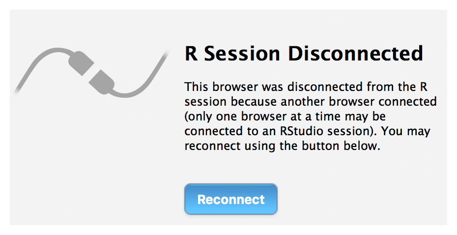
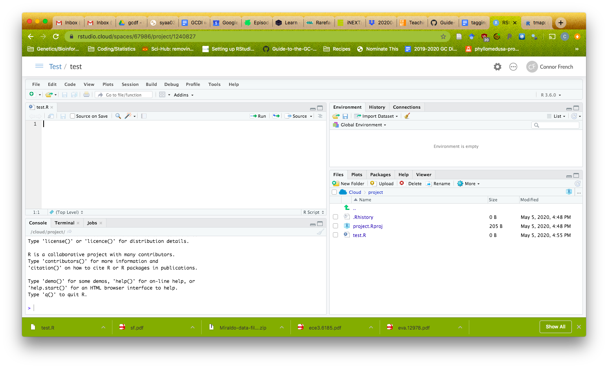

Originally published on GC Digital Initiatives
The R programming language is a powerful analytical tool that is commonly taught alongside applied fields like statistics, ecology, finance, and more. Efficiently integrating the language into a course can be difficult. For example, the time to set up programming exercises, troubleshoot technical issues, and follow progress can quickly eat away at time you as an instructor would probably like to spend covering course material. This is especially true in the current remote learning environment. The less setup and maintenance, the better.
Luckily RStudio, the company behind the popular interactive development environment, has a strong, free(!) solution. RStudio Cloud allows teams to manage R projects in a common space. It is a way for team members (students, teachers, etc.) to collaborate, using the same set of software managed from a central location that the administrator, i.e. the teacher, has control over. The “central location” is a remote server hosted by RStudio that removes much of the headache from admin duties (and having to contact IT). This means that you can load all necessary files and packages into a central location and distribute RStudio sessions to each of your students without worrying about differences in operating system, versioning differences, etc. If a student has a problem, you can check on their project and even make fixes from your computer (with some restrictions)!
The structure of RStudio Cloud is as follows:
A project. This is the fundamental unit of work. You store code, packages, and files here.
The workspace. This is where you create projects. Only you can access your project, but you can adjust permissions to let them be viewed and copied by other users.
A private space. This is critical for teaching! You decide who can access this workspace. Inviting and organizing to your private space is simple.
You can find a detailed and readable guide here! If you are not quite sure this is for you, below is a typical use case, containing only the essential details.
You first set up a private space and determine who can access the space. As an administrator, you can manage membership and can view, edit, and manage all projects in the space. When you add users to the space, their default position is a contributor- they can create, manage, and edit their own projects. If you are fortunate to have a teaching assistant, you can change their permission to moderator, giving them permission to view, manage, and edit all projects in the space. Note- administrators and moderators can edit other users’ projects, but they can only do this when the user has closed the project. Otherwise, you’ll get this error:

You first create a project within this space and populate it with files, packages, and code that you want students to access. When you are ready to distribute the project, you then change the permissions to allow everyone in the space access and select the option to make this project an assignment. Assignments make it easy for students to obtain their own copy of the project (this includes files, packages, and code), which they do by clicking on the assignments link. They can then edit their own copy, interacting with the R script exactly like they would on their personal computer. All users have the ability to download files to their personal computer if they choose.
The working environment for a user looks like a typical RStudio window:

And that’s it! There is plenty more detailed discussion of RStudio Cloud’s capabilities and options here.
There are a few notable limitations to RStudio Cloud. It is in beta, so there may be some instabilities. Feedback is generally positive, and most recommendations are to save often in case the session crashes, which is rare. The initial member limit for workspaces is 10 members, but all requests for more space are honored (anecdotally, classroom sizes > 100 students are possible). Each project copy is given 1 GB of memory and 1 CPU, so large data possibilities are limited. If your course requires large computational resources and you have these available locally or through a paid cloud service, RStudio Server may be another viable option. Development is happening rapidly, so more features will likely be available soon!
Citation
@online{french2020,
author = {Connor French},
title = {RStudio {Cloud} for {Education}},
date = {2020-05-07},
url = {https://delightful-alfajores-5cb3d1.netlify.app/posts/2020-05-07-rstudio-cloud-for-education},
langid = {en}
}